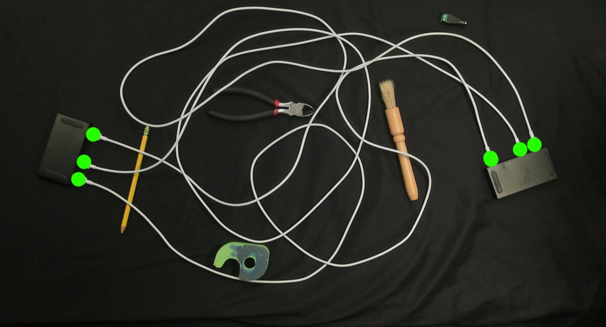
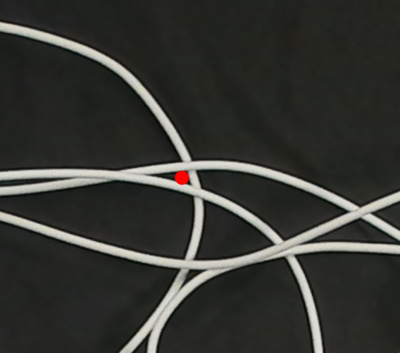

Across 60 cluttered trials, TRACE lifts cable-tracing accuracy from ~60% to ~90%: a +77% average gain over the prior state of the art, and a perfect trace in 32 / 60 scenes.
The monochrome tracing problem
Color makes tracing easy. When cables are monochrome, every strand is visually indistinguishable. At each crossing it is ambiguous which way a cable continues. A robot cannot rely on appearance; it must reason about geometry, and where geometry is ambiguous, it must act to find out. Toggle below: all the visual system can anchor to are the detected connector endpoints.

A Faster R-CNN detects connectors (green), but matching which endpoint joins which, through the crossings, is what TRACE solves.
Bi-directional tracing & divergence
TRACE initiates a trace from every connector, producing two independent estimates per cable. Where a trace from A and a trace from B stop agreeing is, by construction, exactly where the robot is confused: a divergence point. Walk through it:

A and B connectors are detected (green). Each one seeds an independent trace.
Interactive perception primitives
Each divergence point is classified by local cable density. We then pick a physical primitive: a Divergence Push for shallow tangential crossings, or a Cluster Dilation for dense knots where cables visually merge.


The highlighted card is the move TRACE selects for the chosen density. Hover the Cluster Dilation card to watch the gripper rotate the cluster apart.
The full perception–action loop
TRACE runs a closed loop: trace from every connector, find where the traces disagree, then apply a physical move to disambiguate and re-trace. Below is the same logged robot run from the top of the page. Now step through all eight iterations and read the robot’s action log as the colored traces become continuous.
Iteration 0 — initial bi-directional trace. Several cables are still broken at crossings.
Real pipeline run (6 endpoints). Captions are taken verbatim from the robot’s action log.
Cable-tracing accuracy
Average percentage of cable length correctly traced across four complexity tiers (2–4 cables, more crossings each tier). Toggle the scenario: the gap over HANDLOOM 2.0 widens sharply once foreground clutter is added.
With clutter, TRACE traced 100% of all cables in 32 of 60 trials, an average 77% improvement over HANDLOOM 2.0.
Against other tracers & frontier VLMs
| Method | Compute | Initial | Final |
|---|---|---|---|
| RT-DLO (600×600 crops) | 0.05 s | 57.1% | 76.0% |
| TRACE (crops) | 0.40 s | 68.3% | 97.5% |
| Nano Banana Pro (VLM) | — | 37.5% | 34.8% |
| ChatGPT 5.2 (VLM) | — | 19.5% | 26.8% |
| TRACE | 0.40 s | 40.2% | 89.3% |
Unlike the baselines, TRACE’s “final” column reflects accuracy after its interactive moves. Acting to perceive pays off.
TRACE vs. frontier VLMs
Asked to trace the same monochrome scene, state-of-the-art vision-language models invent connections that are not there. TRACE’s geometric, interactive approach wins decisively.

Left: the real monochrome input. Right: a VLM’s colored attempt, visibly wrong where cables cross. Final correctly-traced length; hallucinated cables scored 0.
Citation
@inproceedings{trace2026,
title = {TRACE: Interactive Bi-Directional Cable Tracing Amid Clutter},
author = {Nidhya Shivakumar and Ethan Ransing and Josh Zhang and
Shamak Gowda and Kevin Yang and Justin Yu and Ken Goldberg},
booktitle = {Proceedings of the IEEE/RSJ International Conference on
Intelligent Robots and Systems (IROS)},
year = {2026}
}